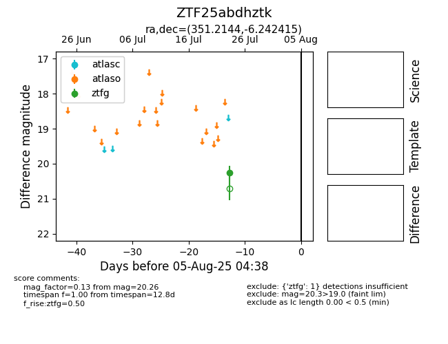

Target ZTF25abdhztk at 2025-08-05 04:38, see:
FINK: fink-portal.org/ZTF25abdhztk
Lasair: lasair-ztf.lsst.ac.uk/objects/ZTF25abdhztk
ALeRCE: alerce.online/object/ZTF25abdhztk
alt names
ZTF25abdhztk (ztf,fink)
coordinates:
equatorial (ra, dec) = (351.2144,-6.24242)
galactic (l, b) = (74.4444,-60.68117)
photometry
last ztfg=20.26
1 ztfg detections
